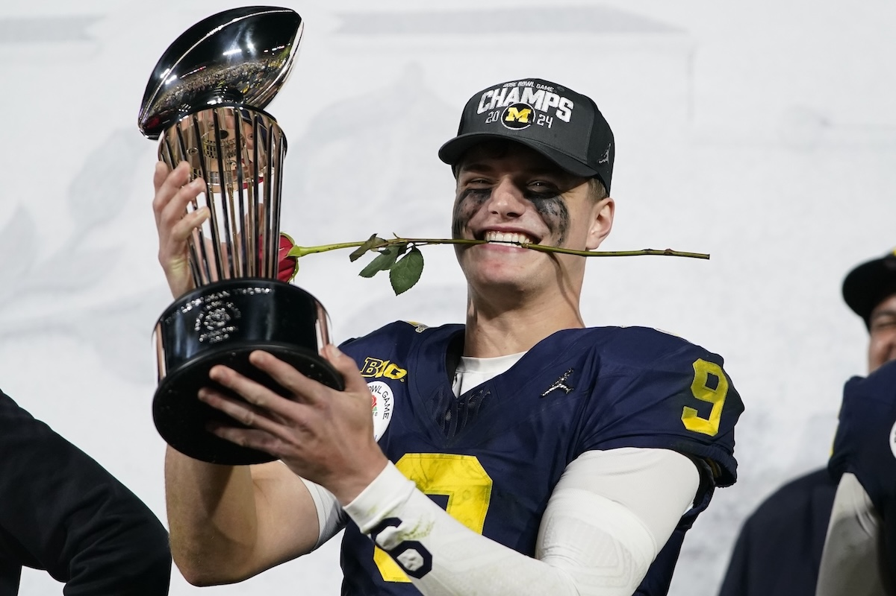

Michgan football is the most dominant college football program in HISTORY. In their 2023-2024 season they were 15-0 and won the National Championship in Houston. Most recently, Michigans football team went to the Cheez-it Citrus Bowl. The year before, they went to the Reliaquest bowl and defeated Alabama as underdogs. In this same season, Michigan defeated their #1 rival, Ohio State, after being predictied to lose by 30. In the previous season, when they won the National Championship, they played in the Rose bowl. They beat Alabama in overtime.